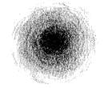
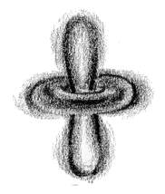
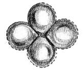

Schrödinger's theory of the quantum world is called wave mechanics. He worked out the exact solutions of the wave equation for the hydrogen atom, and the results perfectly agreed with the known energy levels of these atoms, seemingly without any of the complications and metaphysical speculations associated with the uncertainty principle. Moreover, the equation could also be applied to more complicated atoms, and even to particles not bound in atoms at all. It was soon found that in every case, Schrödinger's equation gave a correct description of a particle's behaviour, provided it was not moving at a speed near that of light. [1]
In spite of this success, the very meaning of the waves remained unclear. Schrödinger believed that the intensity of the wave at a point in space represented the 'amount' of the electron that was present at that point. In other words, the electron was spread out, rather than concentrated at a point. However, it was soon found that this interpretation was untenable, because observations revealed that particles never spread out. For example, it follows from the wave equation that when a wave, representing an electron, strikes a target, it spreads out in all directions. Experimentally, on the other hand, the electron scatters in some specific direction but never breaks up.
This indicated that the simple interpretation of the wave equation as a description of the physical matter waves in ordinary space, as was originally assumed by Schrödinger himself, is incorrect. Born noted the following conclusions:
This difference between the world of the very small and the everyday world we experience cannot be understated. When you are walking across a street and an automobile is approaching you, it is at a definite place at any given time, and it is possible to describe with a great deal of precision where exactly the automobile is, and where it will be at another moment in time if it continues on the same path. For objects in the realm of the very small, this is simply not possible.
These discoveries are at the heart of quantum physics. The importance of the introduction of statistical probabilities into physical law cannot be understated. In earlier physics, that is to say the classical mechanics of Isaac Newton, probabilities had no place. In the Newtonian world-view, an object of any kind could at least in theory be described as having a definite position at any given time. This was not the case at all in the new quantum theory: the probabilities describing material particles could never be replaced by old-style definite positions.
  
Fig. 7-1: Electron probability clouds for the s-, p- and
d-orbitals *
With de Broglie's principle, we can also extend this to electrons and all other matter particles, and hence account for their wave nature (and hence the double-slit experiment). They have been experimentally found to be correct; in 1994, interference fringes, a typical characteristic of waves, were generated with beams of iodine molecules, which are about 500,000 times more massive than electrons.
By 1930s, this indeterministic interpretation of quantum physics, mainly put forward by Niels Bohr with support from Born's probability interpretation and Heisenberg's uncertainty principle, came to be known as the Copenhagen interpretation, mainly because Bohr ran an influential physics institute there during this period. What happened next is dealt with in the next chapter.
* Fig. 7-1 Courtesy: Creation Explanation